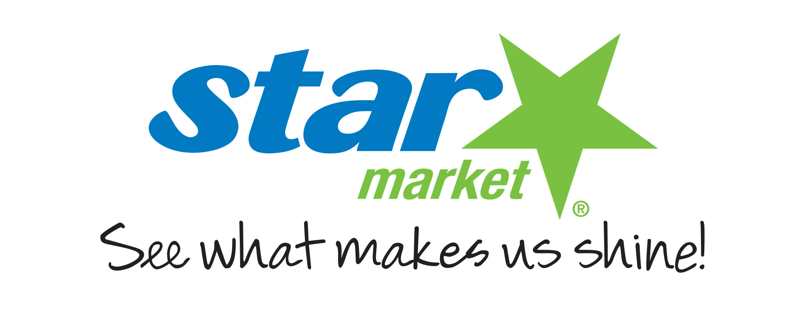
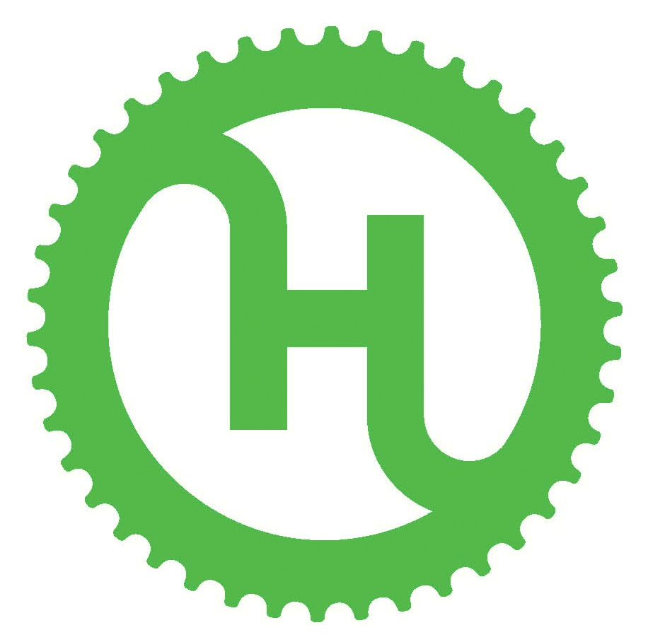

MIT PN2K - GSC SUSTAINABILITY BIKE FEST 2014
With a Bicycle Treasure Hunt*
Get ready for the MIT PN2K - GSC Sustainability Bike Fest 2014!
On
Sunday, September 7 (2-5pm), MIT PN2K and GSC Sustainability will be partnering to throw
a festival for MIT bike riders, both new and experienced!
Check out some of the awesome things we have planned:
- Basic bike repairs & tune-ups (valid MIT ID required)
- "How to Change a Flat Tire" station
- Bike safety resources
- Bike registration
- Raffle prizes
- DJ/Music
- Food
Interested in participating in the Treasure Hunt?*
*The Treasure Hunt is a free guided bike tour on Hubway with limited spots! Must Pre-register here!
Interested in volunteering at the Bike Fest?
Sign up here!
Thanks to our amazing sponsors for the 2014 Bike Fest!
WMBR (MIT's radio station)
MIT Facilities
Starbucks

Star Market 
MIT Parking and Transportation

Hubway 
Whole Foods